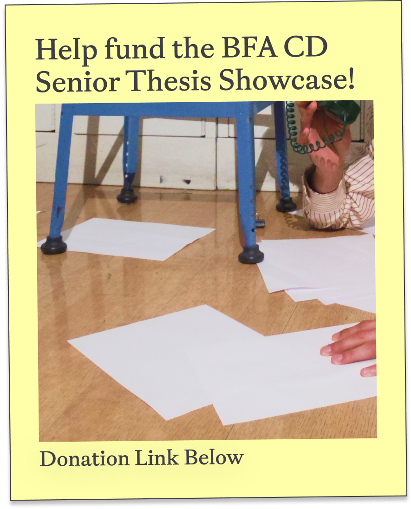
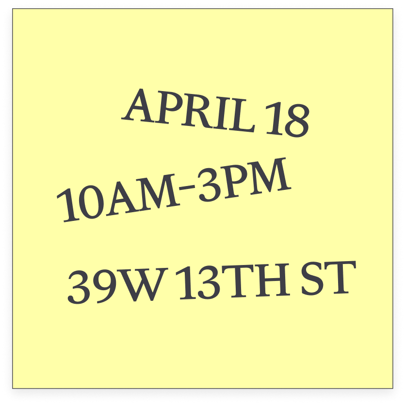

April 18
10AM-3PM
39 W 13th St
Floor 2
New York, NY
Professor(s)
Noah Venezia
2W 13th St
Room 1100
Professor(s)
Zoë Pulley
2W 13th St
Room 503
Professor(s)
Joe Marianek & Dinah Fried
2W 13th St
Room 1013
Professor(s)
Tom Griffiths
2W 13th St
Room 822
Professor(s)
Beatriz Lozano & Lydia Chodosh
2W 13th St
Room 603
Professor(s)
Luke Bulman
2W 13th St
Room 602
Professor(s)
Ingrid Chou & Prin Limphongpand
2W 13th St
Room 704
Professor(s)
Ben Denzer
2W 13th St
Room 1006
Professor(s)
Elaine Lopez
2W 13th St
Room 1011